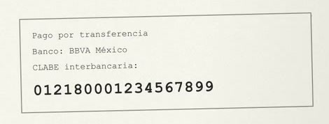
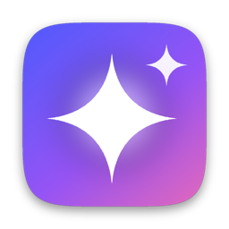

Capturas de pantalla para Mac, más rápidas que un parpadeo.
Destello captura, anota, copia texto y graba tu pantalla con un solo atajo. Del clic al portapapeles en unos 10 ms.
Gratis durante la beta · macOS 15 o posterior · Apple Silicon · 2.1 MB
Un atajo. Todo lo que haces con tu pantalla.
Pulsa ⌥ ⇧ ⌘ 4 y elige qué hacer. Cada función tiene también su propio atajo.
Más rápida que un parpadeo.
Un parpadeo dura unos 300 ms. Del clic al portapapeles, Destello tarda unos 10.
- Atajo → selector 0.7–2 ms
- Clic → vista rápida ~6 ms
- Clic → PNG en el portapapeles ~10 ms
Vive en tu barra de menús.
Nativa para macOS y escrita en Rust: 2.1 MB, sin Electron ni navegador escondido. No ocupa el Dock y ya está lista cuando la llamas.
- AppKit
- ScreenCaptureKit
- Vision
- Apple Silicon
- macOS 15+
Tus capturas no salen de tu Mac.
Sin cuenta, sin nube y sin telemetría. Del atajo al archivo, todo pasa en tu Mac.
- Tu atajo · haz clic para cambiarlo

Captura- Portapapeleslisto para pegar
- Destello 2026-10-09 a las 09.41.12.png
- Texto012180001234567899
Lo único que sale: una vez al día, Destello pregunta si hay una versión nueva. No envía capturas, texto ni datos de uso.
Gratis durante la beta.
Todas las funciones, sin registro. Cuando salga la 1.0 costará un solo pago.
Beta pública
$0ahora
Después, $19 USD pago único. Sin suscripción.
- Todas las funciones, sin límites ni marcas de agua
- Captura, editor, texto, grabación, GIF y página completa
- Actualizaciones automáticas
- Sin cuenta, sin nube, sin telemetría
Preguntas frecuentes.
¿Qué necesito para usar Destello?
Una Mac con Apple Silicon y macOS 15 Sequoia o posterior. La primera vez, macOS te pide el permiso de Grabación de pantalla; Destello te guía paso a paso.
¿De verdad es gratis?
Sí. Durante la beta pública tienes todas las funciones sin pagar ni registrarte. Al salir la 1.0 costará $19 USD en un solo pago.
¿Mis capturas se suben a algún lado?
No. No hay cuenta ni nube: tus capturas se guardan como PNG en la carpeta que elijas. La única conexión es para revisar si hay una versión nueva.
macOS dice que no puede verificar la app. ¿Qué hago?
Mientras la beta no esté notarizada, ábrela la primera vez con clic derecho → Abrir. Después abre normal.
¿Puedo usar ⇧⌘4 para capturar con Destello?
Sí. Desactiva los atajos de capturas de macOS en Ajustes del Sistema y asígnalos en las Preferencias de Destello. Todos los atajos se pueden cambiar.
¿Por qué es tan rápida?
Está escrita en Rust sobre AppKit, ScreenCaptureKit y Vision. Las ventanas del selector se preparan al arrancar, la pantalla se congela mientras eliges y el PNG se comprime usando todos los núcleos a la vez.

Tu próxima captura, antes de que parpadees.
Versión 0.1.0 · 2.1 MB · macOS 15 o posterior